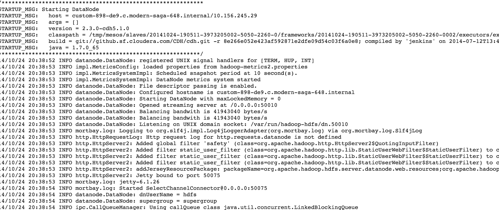

Simplifying Analytics, Machine Learning, and Big Data
Mesos, Chronos, and HDFS
Elizabeth Lingg @ Mesosphere, Inc.
Distributed Computing Meets Analytics
Chronos
HDFS
Live Demo
How Big is Big Data?


Why Distributed Computing?
Map: Break down analysis into tasks to be executed
Reduce: Aggregate and apply a specific function on executed tasks
Why Distributed Computing?
- Work in parallel to improve speed and performance
- Fault tolerance / Relaunch if there are failures

Chronos
HDFS
Live Demo
Introducing Chronos

Chron Scheduler for short running jobs
Introducing Chronos

Scheduling with repeating intervals
Dependency graph for execution
Launch a task
POST -d '{
"schedule": "R10/2012-10-01T05:52:00Z/PT2S",
"name": "SAMPLE_JOB1",
"epsilon": "PT15M",
"command": "echo 'FOO' >> /tmp/JOB1_OUT",
"owner": "bob@airbnb.com",
"async": false
}' localhost:8081/scheduler/iso8601
Launch a more complex task with parents
POST -d '{
"async": true,
"command": "bash -x /jobs/hive_query.bash
run_hive hostings-earnings-summary",
"epsilon": "PT30M",
"errorCount": 0,
"name": "hostings_earnings_summary",
"owner": "bob@airbnb.com",
"parents": [
"db_export-airbed_hostings"
],
"retries": 2,
"successCount": 100
}' localhost:8081/scheduler/dependency
Run Docker Containers
--containerizers=docker,mesos
POST -d '{
"schedule": "R\/2014-09-25T17:22:00Z\/PT2M",
"name": "dockerjob",
"container": {
"type": "DOCKER",
"image": "python:3",
"network": "BRIDGE"
},
"cpus": "0.5",
"mem": "512",
"uris": [],
"command": "python3 -m http.server 8080"
}' localhost:8081/scheduler/iso8601
Chronos REST
PUT chronos-node:8080/scheduler/job/job1GET chronos-node:8080/scheduler/jobsDELETE chronos-node:8080/scheduler/task/kill/job2
Chronos
HDFS
Live Demo
Introducing the Mesos HDFS Framework

A new HDFS framework running directly on Mesos
Introducing the Mesos HDFS Framework

Fault Tolerance is Managed by Mesos
High Availability (HA) Mode
HDFS Framework Components
- DataNodes which manage the data
- Two NameNodes Machines for HA
- A JournalNode to create a quorum
HDFS Framework Components
Each NameNode Machine contains:
- NameNode (manages the Datanodes)
- JournalNode (for logging the edits to the NameNodes)
- ZKFCNode (Zookeeper Node)
HDFS Framework
Management of HDFS is done by the framework itself
Logging and management of failures
Chronos
HDFS
Live Demo
Thanks!
Join the Mesos community
 |
https://github.com/apache/mesos/ https://github.com/mesosphere/chronos/ |
|
Get Mesos packages: http://mesosphere.io/downloads Get hired: http://mesosphere.io/jobs |
|